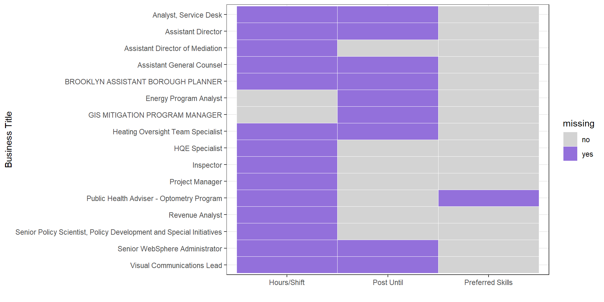

Chapter 4 Missing values
For convenience, we replace all empty value to NA first.
## [1] 2838 30Our dataset has 2838 rows and 30 columns.
We want to check if there is any missing value in our NYC job dataset.
## col
## Recruitment Contact 2838
## Hours/Shift 2050
## Post Until 1803
## Work Location 1 1517
## Additional Information 1109
## Preferred Skills 294
## Full-Time/Part-Time indicator 198
## Minimum Qual Requirements 23
## To Apply 3
## Job Category 2
## Career Level 2
## Residency Requirement 2
## Job ID 0
## Agency 0
## Posting Type 0
## # Of Positions 0
## Business Title 0
## Civil Service Title 0
## Title Classification 0
## Title Code No 0
## Level 0
## Salary Range From 0
## Salary Range To 0
## Salary Frequency 0
## Work Location 0
## Division/Work Unit 0
## Job Description 0
## Posting Date 0
## Posting Updated 0
## Process Date 0We can see that there are total 12 columns have missing values. We decide to ignore Minimum Qualify Requirement, To Apply, Job Category, Career Level and Residency Requirement because they only have less than 1% missing values in 2838 records.
We choose 7 columns that have more than 1% missing values to draw the missing pattern graph
From above plot we can observed that there are 53 different patterns. There are no rows recorded as complete for all variables. The reason may be each job position is different. The most common pattern is missing of Recruitment Contact, hours shift, Post Until and location.
From above plot, we can see that 100% of Recruitment Contact are missing, so we decide to drop this column. The hours/Shift have over 75% values are missing, and for those values that are not lost, they are very different from each other, and are also difficult for us to classify and compare, so we decide to remove this column. The Post Until column have over 50% values are missing but we will keep it because Post Until is a date that the job post is available, and the missing means this post will remain available until filled. The Prefered Skill column have 10% values are missing. We will keep it because the missing means this post do not have prefered skill requirement. For other variables, we will determine how to deal with them after we finish data transformation.

Since Business title is one of the most important variables,we choose some records to analyze the relationship and check if our decision is right.